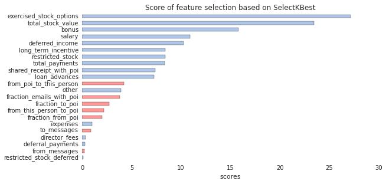
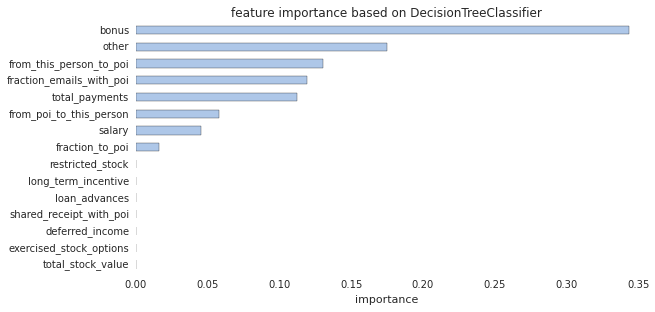
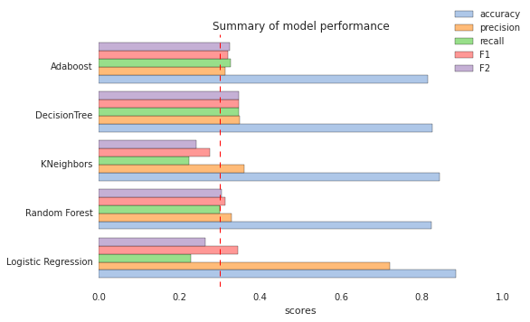

1. Summarize for us the goal of this project and how machine learning is useful in trying to accomplish it. As part of your answer, give some background on the dataset and how it can be used to answer the project question. Were there any outliers in the data when you got it, and how did you handle those? [relevant rubric items: “data exploration”, “outlier investigation”]
The goal of this project is to develop machine learning algorithm, together with scikit-learn Python module, to predict the person of interest (POI) of a fraud from the email and financial (E+F) dataset. POIs were ‘individuals who were indicted, reached a settlement, or plea deal with the government, or testified in exchange for prosecution immunity.’ The E+F dataset from the Enron Corpus was used as features for the POI prediction.
Enron was an infamous American company which was known for its extensive fraud. Enron marketed electricity and natural gas, delivered energy and other physical commodities around the world. It was once ranked the sixth largest energy company in the world. Most of the top Enron's executives were tried for fraud after it was revealed in November 2001 that Enron's earnings had been overstated by several hundred million dollars. Enron paid the top 140 executives $680 million in 2001. Among others, Kenneth Lay (founder, chairman of the Enron board directors) received $67.4 million and Jeffrey Skilling (former CEO) received $41.8 million. Moreover, the top executives sold their company stock prior to the company's downfall. The Enron scandal was one of the five largest audit and accountancy partnerships in the world and Enron was cited as the biggest audit failure.
On the other hands, the Enron Corpus is believed to be one of the largest publicly available collection of real-world email data. It has been widely used for research in social network analysis, natural language processing, and machine learning. The Enron financial records of former executives and employees were also released during the fraud trials.
I removed the following entries in the dataset.
TOTAL is the summation of all the data points for each feature, and it is the biggest Enron E+F dataset outlier. THE TRAVEL AGENCY IN THE PARK is a travel agency, not the name of employee at Enron.LOCKHART EUGENE E missed all the feature values, and is not very useful in the dataset.email_address feature is also a outliner, because it is a person's email address and is not useful to identify POIs.This dataset contains lots of missing values (NaN). Many machine learning models don't like NaN. If we just fill the NaN values with zero, it may bias the data towards low values. The solution here is to fill the NaN values with median values for each feature.
2. What features did you end up using in your POI identifier, and what selection process did you use to pick them? Did you have to do any scaling? Why or why not? As part of the assignment, you should attempt to engineer your own feature that doesn’t come ready-made in the dataset--explain what feature you tried to make, and the rationale behind it. (You do not necessarily have to use it in the final analysis, only engineer and test it.) If you used an algorithm like a decision tree, please also give the feature importances of the features that you use. [relevant rubric items: “create new features”, “properly scale features”, “intelligently select feature”]
I engineered the following three features. The reason is that individuals that are in frequent contact with POIs are likely to be POIs.
| new features | description |
|---|---|
fraction from poi |
fraction of messages from a PO to that person I |
fraction to poi |
fraction of messages from that person to a POI |
fraction email with poi |
fraction of messages to and from that person to a POI |
But unfortunately, they did not improve the overall performance of the modeling, so they were not included in the final model.
Before feeding the features into any models, it is necessary to scale the feature values to be between 0 and 1. It is because if one feature has a broad range of values, the outcome will be governed by this particular feature. Therefore, the range of all feature values need to be normalized, so that each feature contributes approximately proportionately to the final outcome.
I used SelectKBest to search the best features in E+F feature list, according to the ANOVA F-value classification scoring function, as below. This step can get rid of some unnecessary features that may overfit the predictive model. 
The top 15 features from SelectKBest were fed to the DecisionTreeClassifier algorithm to determine the feature importance. 
I then removed the features by hand to optimize the score of the model. Finally, I chose the following featurest:
'exercised_stock_options', 'total_stock_value',
'bonus', 'salary', 'deferred_income'3. What algorithm did you end up using? What other one(s) did you try? [relevant rubric item: “pick an algorithm”]
Initially, I fed the top 5 features that were found by SelectKBest to the following algorithms with default parameters and compared their scores.
| Algorithm | Accuracy | Precision | Recall |
|---|---|---|---|
| Naive Bayes | 0.9333 | 0.5 | 1.0 |
| KNeighbors | 0.9333 | 0 | 0 |
| AdaBoost | 0.9333 | 0 | 0 |
| Logistic Regression | 0.9333 | 0 | 0 |
| Random Forest | 0.8667 | 0 | 0 |
| LinearSVC | 0.8667 | 0 | 0 |
| Decision Tree | 0.7333 | 0 | 0 |
They gives high accuracies, but the precision and recall are zero for all the models, except the Naive Bayes. Surprisingly, Baive Bayes has the highest accuracy and precision with a recall of 1.0. It is too high to be true, and it may be due to overfitting.
I fined tune the parameters of Decision Tree, AdaBoost, KNeighbors, Random Forest, and Logistic Regression to get the optimal performance of the models. Finally, I end up using AdaBoost (with optimal Decision Tree estimator) and Decision Tree algorithms, because the scores of precision and recall for both models are the highest among other algorithms (> 0.3).
4. What does it mean to tune the parameters of an algorithm, and what can happen if you don’t do this well? How did you tune the parameters of your particular algorithm? (Some algorithms don’t have parameters that you need to tune--if this is the case for the one you picked, identify and briefly explain how you would have done it if you used, say, a decision tree classifier). [relevant rubric item: “tune the algorithm”]
Tuning the parameters of algorithm means to optimize the performance of the model to the particular features in the dataset. The performance can be determined by accuracy, precision, and recall scores.
To optimize the performance of model, I first scales the selected features to be between 0 and 1 using MinMaxSxaler. The scaled features was fed into Principal Components Analysis (PCA) dimensional reduction algorithm as a part of GridSearchCV pipeline, when searching the optimal estimator parameters for particular classification algorithm. These two steps were used during each cross-validation step for the grid search and optimal parameters. For the Decision Tree Classifier, I found the optimal value of min_sample_splitand min_samples_leaf to get high accuracy, precision and recall was 0.316 and 1, respectively.
| optimized parameter | Adaboost | Decision Tree | KNeighborss | Random Forest | Logistic Regression |
|---|---|---|---|---|---|
n_components (PCA) |
3 | 3 | mle | 3 | 3 |
base_estimator |
DecisionTree | ||||
criterion |
gini | gini | |||
min_sample_split |
0.316 | ||||
min_samples_leaf |
1 | ||||
n_estimators |
1 | 1 | |||
learning_rate |
0.5 | ||||
n_neighbors |
1 | ||||
p |
1 | ||||
C |
10 | ||||
tot |
1e-64 | ||||
random_state |
42 | 42 |
5. What is validation, and what’s a classic mistake you can make if you do it wrong? How did you validate your analysis? [relevant rubric item: “validation strategy”]
Validation is an approach to split the data into a a training set and a testing set. This allow us to train the model on a training set, and then test the performance of that model on an independent test dataset. This strategy can avoid overfitting data to our models, and also avoid the case where a model is too specific to the training data.
I validated the dataset using StratifiedShuffleSplit function from sklearn, which also provided in the testclassifer() in test.py. The niter (represented by the folds variable) was set to 100, and I used 90% data to train the model and 10% data to test the model. That means the model randomly samples 90% (10%) data to train (test) the model for each iteration, and averaged the scores for the final model validation.
Five algorithms were tested, and all of them gave fairly good accuracies. The Decision tree and Adaboost and classifiers ended up performing the top 2 best models, with precision and recall values above 0.3.

6. Give at least 2 evaluation metrics, and your average performance for each of them. Explain an interpretation of your metrics that says something human-understandable about your algorithm’s performance. [relevant rubric item: “usage of evaluation metrics”]
In many cases, the accuracy can be pretty good (>85%), but still lacking good precision or recall (<30%). It is important to note that a model has a very high accuracy does not mean it is a good model. There is also a trade-off between precision and recall, which needs to be balanced in the models. However, the Enron E+F dataset contains much more POIs than non-POIs (18 vs 127). With this unbalanced dataset, the precision and recall are useful metrics for evaluating the model. For example, the original Enron data contains 18 POIs over 145 employee. The optimal Decision Tree model can successfully identify 15 individual as POIs, where only 6 of them actually to be POIs. More data will definitely help to improve the performance and validation of models.